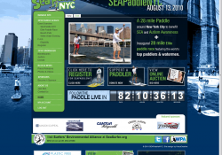
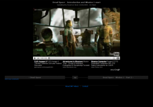
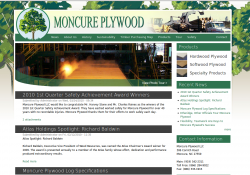

I was surprised to find out that Drupal's simpletest framework does not have a built in function to create a user with a role. After searching around the net I came across this blog post which helped me: http://mediatribe.net/en/node/49
Dave Parrish
Freelance web page developer
drupal
Ubuntu 10.04 Lucid LAMP server running php 5.2 and 5.3
Note: I could not get 5.2 and 5.3 running at the same time. I could only get them both installed so where I could quickly enable one or the other. I had to use a2enmod php5 and a2dismod php5 to turn PHP 5.2 on and off because PHP 5.3 would also take priority otherwise.
SEA Paddle NYC - Website update

Kraus Creative wanted to update the previous SEA Paddle NYC website so that the client could more easily maintain the site. Kraus Creative already had a design ready so only the implementation of the design was needed. Jacob implemented the Drupal theme for SEA Paddle NYC brilliantly and all that was left to do was to implement the new features. The new features included a slideshow on the front page, a sponsor carousel on the front page, an area to embed Flickr sets, an area to embed Youtube videos and a blog / news area.
DRT Videos - Personal Video Game Walkthroughs Website

DRT Videos is a person project of mine. I have always enjoyed playing video games and have fond memories of my brothers watching me play as I would adventure through new virtual worlds. DRT Videos is a website where others can watch games that I have played. DRT Videos is also a website to link to other video game videos that others have made. It would be impossible to play and record all the video games I am interested in, so I will link to others who have created high quality videos of video games as well.
New website for established business

Moncure Plywood wanted to establish a web presence where they could show off their products and post recent news. For my part I setup a WYSIWYG for easy editing of site content and handled all hosting issues. The design was done by Jacob Parrish.
Upgraded static site to a full CMS with a private member area and SEO

King's Greenhouse came to DRT Media with a static website and wanted it update to a full CMS with a private members area. They also wanted the website to be search engine optimized. The new website allowed for each page of the website to be easily edited using a the FCKEditor WYSIWYG. Also, each feature of the site (products, events, etc) could be added, deleted and edited using only the web interface provided.
Strange IE bug on the first load only; Caused by the "Optimize CSS files" setting
Most of the time turning on "Optimize CSS files" in the performace section of Drupal works great. But, for some reason, having this option turned on was causing the jquery.cycle plugin to break only on the very first load of Internet Explorer. What was happening was that the second image to transition in was being resized to about 50x50px when it should have been something like 900x300px.
Major Site Redesign
Free Talk Live is a liberty oriented talk radio show. Although Free Talk Live already had a successful website they wanted to improve the old by making it a Digg like social networking site for liberty themed topics. I came in at the tail end of the project but was able to get the site ready to launch as well as add several custom features.
Site SEO and the many Drupal modules
I have finally gotten around to installing all of the modules for Drupal SEO on this site. I always follow the SEO checklist when setting up SEO for customers and my own sites. I have realized in setting up the SEO modules that I use a TON of modules! I thought it would be fun to list out all of the modules used for this simple portfolio and blog site. Here goes:
Account Menu
Administration menu
Backup and Migrate
CCK
Contemplate
Date
File Field
Global Redirect
Google Analytics
Image API
Image Cache
Image Field
Inline
jQuery UI
Link
Mollom
Page Title
Pathauto
Custom Drupal CMS - Reindeer Run

The Charitable Society of Charleston needed a custom CMS and a new design for their charity run event. They wanted an easy way to modify the content from year. The content included sponsors, race results, race photos and race information.
The sponsors and race photos were crafted using the ImageCache and ImageField modules along with the CCK to give a very easy to use administration section. Using the administration section the client can easily add, delete and reorder Sponsors and Photos Gallery pictures.